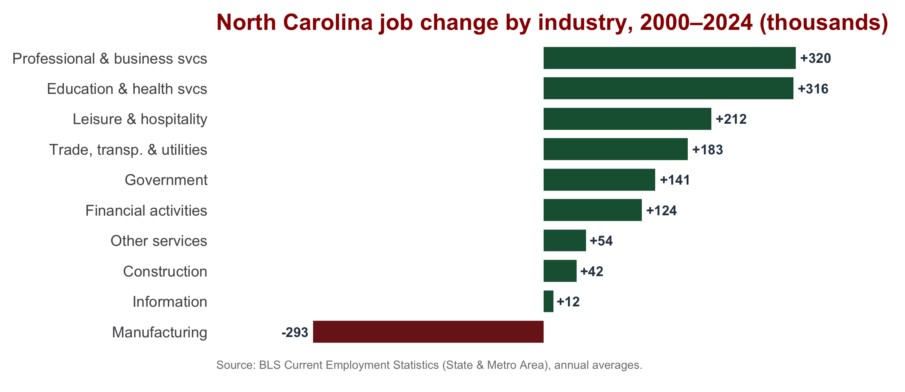
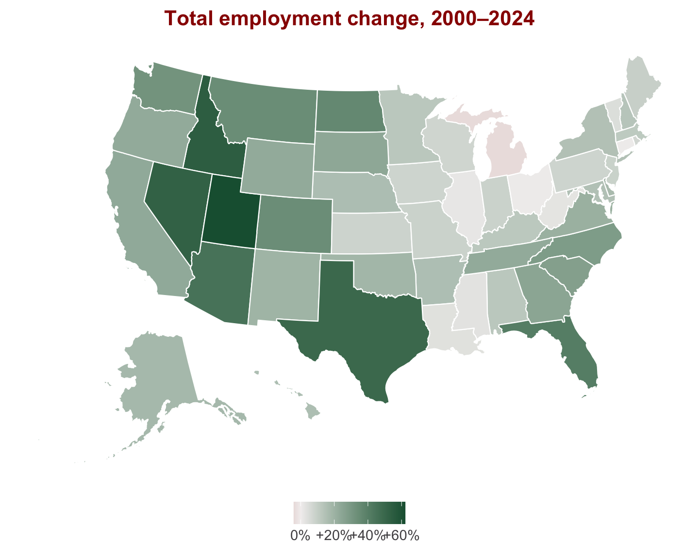
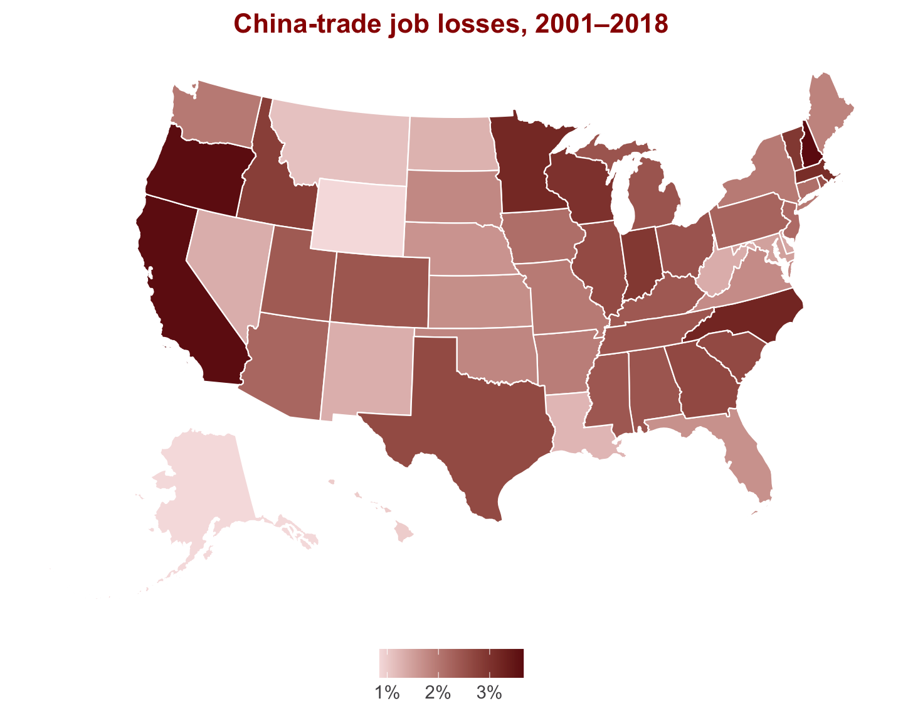
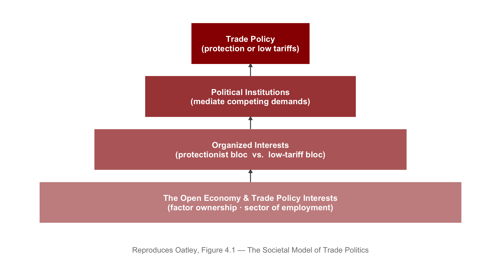
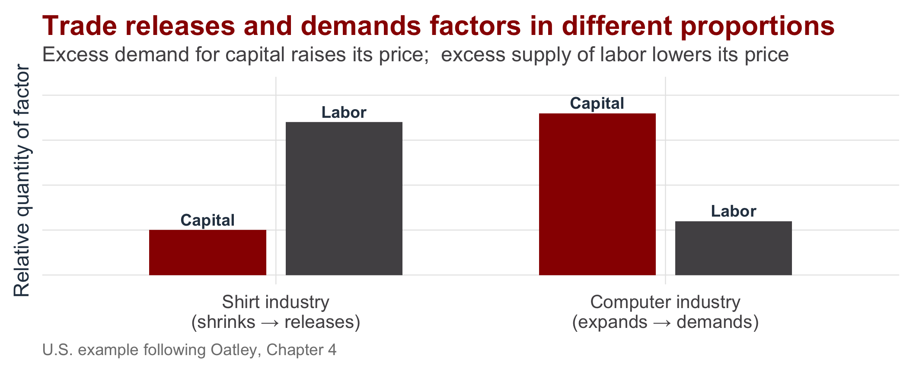
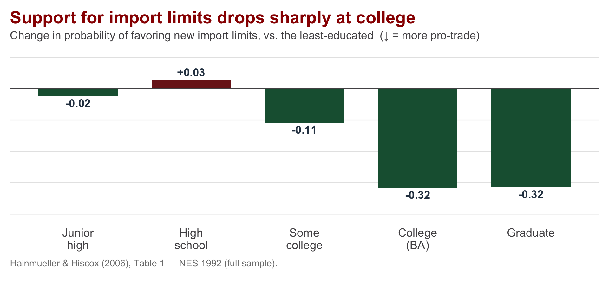
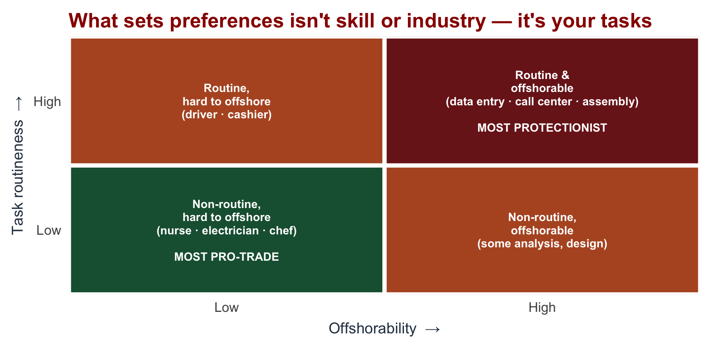
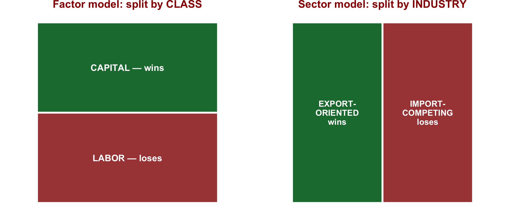
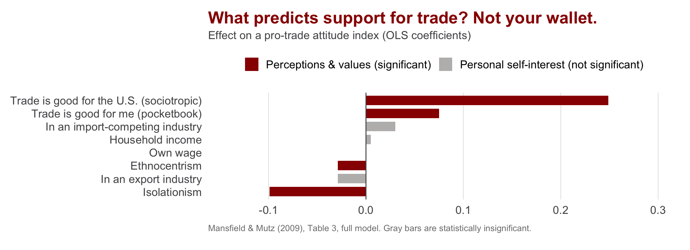
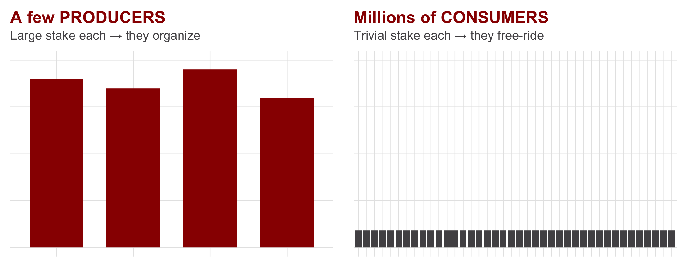

| Section | What we'll cover |
|---|---|
| 1 · The Puzzle: Winners and Losers | Trade gains on net, yet protection is everywhere — why? |
| 2 · The Factor Model: Trade as Class Conflict | Stolper-Samuelson: trade pits the abundant factor against the scarce one |
| 3 · The Sector Model: Trade as Industry Conflict | Specific factors: trade pits export industries against import-competing ones |
| 4 · Which Model Is Right? | The one assumption that flips the story — and what the evidence shows |
| 5 · Collective Action: Preferences into Policy | Why producers prevail over consumers, and why policy tilts protectionist |
| 6 · Political Institutions and the Supply of Policy | Which institutions overcome the protectionist bias — and which entrench it |
| 7 · Weaknesses + Handoff | What this approach cannot explain — and the bridge to Day 5 |
A Society-Centered Approach to Trade Politics
INTL 503 | Chapter 4
Professor Sarah Bauerle Danzman
July 10, 2026
Today’s Plan
Today’s Big Question
If trade makes a country richer on net, why does anyone fight it — and what decides who wins that fight?
The Puzzle: Winners and Losers
Protectionism Is a Puzzle
Trade enlarges the pie. comparative advantage
Tariffs shrink it. deadweight loss
So why is protection everywhere?
Because trade creates winners and losers within a country — and the losers vote, lobby, and organize.
Same State, Opposite Fortunes
North Carolina’s economy grew over 2000–2024 — but the gains and losses were unevenly distributed across industries.

Manufacturing — textiles and furniture above all — collapsed, while health, professional services, and finance grew. Same state, opposite fortunes — and it is the concentrated losers who organize.
The Geography of Gains — and Trade Losses

Employment grew almost everywhere — most states added jobs on net over two decades.

Yet the U.S.–China trade deficit displaced jobs in every state — heaviest in manufacturing and tech-hardware states.
Sources: total employment — BLS Current Employment Statistics (annual averages). Trade-related job loss — Economic Policy Institute (Scott & Mokhiber 2020): net jobs displaced by the growing U.S.–China goods trade deficit as a share of state employment, 2001–2018.
The Society-Centered Pyramid

The Factor Model: Trade as Class Conflict
The Factor Model: Assumptions
The factor model holds that trade politics is a contest between factors of production — labor against capital.
Stylized Example:
- Two countries: the United States and China
- Two goods: computers and shirts
- Two factors: capital and labor (let’s hold land to the side)
- The U.S. is capital-abundant; China is labor-abundant
The most important assumption: factors are perfectly mobile across sectors. Labor and capital can move freely from shirts to computers.
What Trade Does to Factor Incomes

The Stolper-Samuelson Theorem
Trade raises the income of a country’s abundant factor and lowers the income of its scarce factor.
| Capital | Labor | |
|---|---|---|
| United States (capital-abundant) | WINNER — return to capital rises | Loser — wages fall |
| China (labor-abundant) | Loser — return to capital falls | WINNER — wages rise |
And if trade continues uninterrupted, factor-price equalization: American and Chinese wages converge, as do the returns to capital in the two countries.
Callback — Day 1 (Subramanian podcast): China’s exports have not shed their labor-intensive content the way factor-price equalization predicts. By not vacating the low rungs of the value chain, China keeps crowding the export niche other developing countries need to climb through — squeezing them.
From Incomes to Preferences – Where Capital > Labor
LABOR — the scarce factor
income falls → wants HIGH tariffs
AFL-CIO opposed NAFTA, the TPP, and fast-track
CAPITAL — the abundant factor
income rises → wants LOW tariffs
Business Roundtable & NAM back liberalization
The factor model predicts class conflict — labor against capital over the distribution of national income.
Refining the Model: Skill
Labor isn’t homogeneous. Split it by skill and the factor logic sharpens: in the skill-abundant U.S., higher-skill workers gain from trade while lower-skill workers lose.

Education is the strongest correlate of pro-trade views — yet Hainmueller & Hiscox (2006) argue the channel is economic ideas and cosmopolitan values, not skill or wages: the effect holds even for people out of the labor force.
But skill is still a blunt proxy. The newest work asks a sharper question — what do you actually do all day?
Beyond Skill: It’s the Tasks
The newest evidence pushes past skill and industry: what predicts your preference is the nature of your tasks — how routine they are, and how easily they can be offshored.

Routine, offshorable jobs breed protectionism — whatever the worker’s skill or sector. After education, task routineness is the single labor-market trait most robustly tied to trade preferences.
Owen & Johnston, “Occupation and the Political Economy of Trade: Job Routineness, Offshorability, and Protectionist Sentiment,” International Organization 71(4), 2017; Blonigen, “Task Routineness and Trade Policy Preferences,” Economics & Politics, 2014. (Figure is an original schematic of their findings.)
The Sector Model: Trade as Industry Conflict
A Single Change: Immobile Factors
The sector model (the specific-factors, or Ricardo-Viner, model) assumes factors are immobile — specific to the industry in which they are currently employed. (In the long run, we’re all dead - John Maynard Keynes)
Why factors become immobile:
- Capital is sunk — a loom cannot produce microchips
- Workers possess industry-specific skills
- Relocation carries logistical, social, and psychological costs
When factors cannot move, labor and capital in the same industry share its fate. The cleavage is no longer class — it is industry.
Winners and Losers by Industry

In the U.S., the export-oriented sector (capital-intensive, high-technology: computers, pharmaceuticals, biotechnology) gains; the import-competing sector (labor-intensive: apparel, footwear) loses.
Cases and Coalitions
Milliken and Dell
- Roger Milliken (textile magnate) loses from trade — and so do his apparel workers.
- Michael Dell (computers) gains from trade — and so do his engineers.
Owner and worker stand on the same side, because they are bound to the same industry.
Empirical Support - Coalition Patterns
- UNITE (apparel union) and ATMI (textile firms) both opposed liberalization.
- High-technology business associations and their workers both supported it.
The models assume factors are immobile internationally. True of labor, less true of capital, which erodes labor’s power in a globalized economy.
Which Model Is Right?
Two Models, One Difference
| The Factor Model | The Sector Model | |
|---|---|---|
| Principal actors | Factors of production / classes | Industries / sectors |
| Are factors mobile? | Yes — perfectly mobile across sectors | No — immobile, specific to a sector |
| Winner from trade | Abundant factor (U.S.: capital) | Labor + capital in export-oriented industries |
| Loser from trade | Scarce factor (U.S.: labor) | Labor + capital in import-competing industries |
| Central cleavage | Protectionist labor vs. liberalizing capital | Protectionist import-competing vs. liberalizing export sectors |
Hiscox’s (2002) resolution: mobility is itself variable. High inter-industry mobility yields class politics; low mobility yields industry politics. The applicable model depends on the economy and the time horizon.
Do Preferences Track Material Interest?
Often not. What you believe trade does to the country (sociotropic considerations), and how you regard out-groups (status concerns), dominate.

Brexit, the hard case: education and income predicted the vote — but so did immigration attitudes, identity, and sovereignty (a “left-behind” coalition; Sampson 2017).
Mansfield & Mutz (2009); see also Rho & Tomz (2017), Mutz & Kim (2017), Naoi (2020).
Collective Action: Preferences into Policy
The Collective Action Problem
A shared preference is inert until a group organizes — and organizing is a public-goods problem (Olson 1965): the few with a large stake mobilize, the many with a trivial stake free-ride.

A tariff’s concentrated benefits (a few producers) beat its diffuse costs (all consumers). Policy tilts toward protection — numbers do not equal power.
Political Institutions and the Supply of Policy
What Institutions Help Overcome Protectionist Pressure?
Collective action biases policy toward protection. Some institutions counteract that bias; others merely shape — or entrench — it.
| Institution | Effect on protectionist pressure |
|---|---|
| Delegate trade authority to the executive (RTAA, 1934) | Lets the president negotiate reciprocal deals that tie U.S. tariff cuts to foreign-market opening → mobilizes EXPORTERS as a pro-trade lobby. The classic cure for the protectionist bias. |
| Electoral system: majoritarian vs. PR | Shapes who organizes — narrow SECTORS (majoritarian; single-member districts, U.S./U.K.) vs. broad CLASS / FACTOR coalitions (PR; Norway). Net effect on the level of protection is contested. |
| Veto players (Tsebelis 2002) | Any actor whose assent is needed to change policy. More veto players → the status quo is STICKY; tariffs, high or low, resist change. |
On electoral systems the evidence is inconclusive/mixed (Rogowski 1987; Evans 2009; Hatfield & Hauk 2004; Mansfield & Busch 1995; Rickard 2015) — they clearly matter, but we cannot sign the effect on the level of protection.
Weaknesses + Handoff
Three Weaknesses — and the Bridge to Day 5
- It does not explain outcomes. It identifies the winners and losers, but not which side prevails. To infer power from the policy itself is tautological.
- It assumes politicians are passive — mere conduits for interest-group pressure, with no objectives of their own.
- It neglects non-economic actors — environmental and human-rights groups that shape trade politics on grounds other than income.
Oatley’s defense: a theory’s worth lies in its usefulness, not its completeness. The enduring feature of trade politics is the contest over the distribution of income.
Weakness #2 is the thesis of Day 5 — the state-centered approach.
Next: Presentation, Discussion, and Quiz 1
We have built the framework. Our presenter will now show it under strain — what moves trade preferences when material self-interest is not the whole story.
Questions to hold during the presentation
- Do people prefer to trade with allies rather than rivals, even at an economic cost?
- How does framing trade as a security question change preferences?
- What does this imply for the factor and sector models we built today?
Student-led article presentation
Carnegie, A. & Gaikwad, N. (2022). “Public Opinion on Geopolitics and Trade: Theory and Evidence.” World Politics 74(2): 167–204.
Then
Quiz 1 — Chapters 1–4

INTL 503 | A Society-Centered Approach to Trade Politics